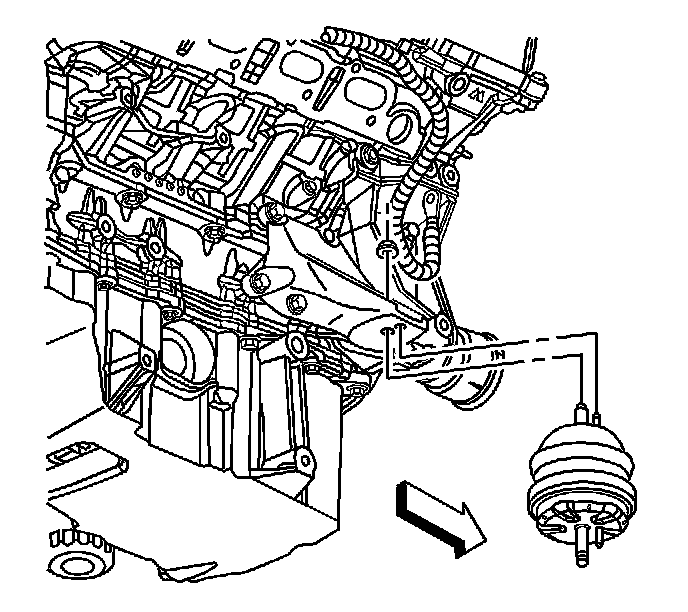
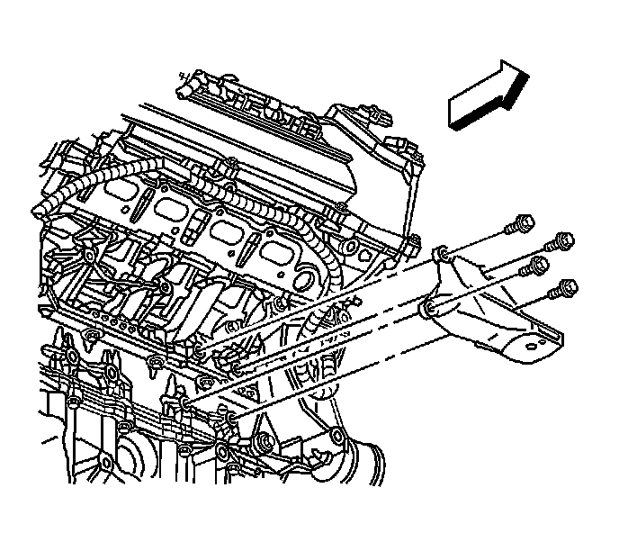

Engine Mount Bracket Replacement - Right
Engine Mount Bracket Replacement - Right Side (w/AWD)
Removal Procedure
1. Raise and support the vehicle. Refer to Lifting and Jacking the Vehicle (Service and Repair) .
2. Remove the right exhaust manifold. Refer to Exhaust Manifold Removal - Right Side (RWD) (Overhaul)Exhaust Manifold Removal - Right Side (AWD) (Overhaul) .
3. Install a screw jack with a block of wood under the oil pan for support.

4. Remove the right engine mount upper retaining nut.

Important: Ensure not to distort or bend the engine mount heat shield.
5. Remove the right engine mount bracket mounting bolts.
6. Remove the engine mount bracket from the vehicle.
Installation Procedure
1. Install the engine mount bracket to the vehicle.
Notice: Refer to Fastener Notice (Fastener Notice) .
2. Install the engine mount bracket mounting bolts.
Tighten the bolts to 60 N.m (44 lb ft).
3. Remove the screw jack.
4. Install the upper engine mount retaining nut.
Tighten the nut to 80 N.m (59 lb ft).
5. Install the right exhaust manifold. Refer to Exhaust Manifold Removal - Right Side (RWD) (Overhaul)Exhaust Manifold Removal - Right Side (AWD) (Overhaul) .
6. Lower the vehicle.